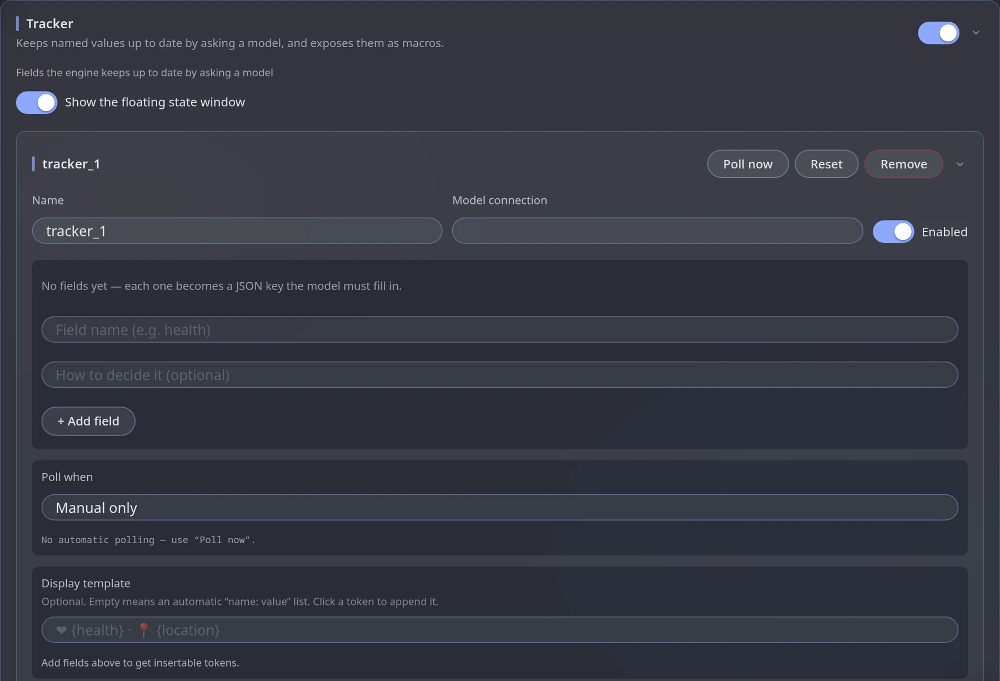

Tracker
module.trackerThe Tracker keeps named values (health, mood, location, anything) up to date by asking a model after or before replies. The values appear in a small always-on-screen window and become macros you can use in prompts.
What it is good for
- Show the hero's health, money, mood or location at a glance.
- Make the model aware of the state: put
{{tracker_health}}in your prompt and the reply can react to it. - Keep long-running facts (who is allied with whom, what day it is) from drifting.
Values are saved per message, so rerolling or going back to an older message shows the value of that moment.
Set up your first tracker
Switch the module on
Engine panel → Modules → switch on Tracker.
Create a tracker
Press + Add tracker. It is created as tracker_1 — rename it to something short, lowercase and without spaces, such as status. The name becomes part of its macros.
Pick a connection
Choose which model answers. A cheap fast one is fine — the answer is small JSON.
Add fields
Press + Add field. Give each field a name (Field name, e.g. health) and, in How to decide it, a short hint telling the model what to write. Each field becomes a JSON key the model must fill in. Clear hints matter more than anything else here.
Choose when it updates and Save
Set Poll when — it starts as Manual only (see below) — then press Save; nothing takes effect until saved. Use Poll now to test.

Example fields
| Field | Prompt | Starting value |
|---|---|---|
health |
how hurt the hero is, 0–100 | 100 |
location |
where the scene currently takes place | Unknown |
mood |
the hero's dominant emotion, one or two words | Calm |
When should it update?
| Poll when… | Use it for |
|---|---|
| after every reply | Most trackers — the value is fresh for the next turn |
| every N replies | Slow-changing values; saves cost |
| every N minutes | Real-time pacing |
| when I send a message | Reacting to your input |
| before the reply is generated | Values the reply must already know (see below) |
| Manual only (the default) | A tracker you update yourself with Poll now |
Hold the generation until this tracker answers. Only available with before the reply. The reply waits so it already sees the fresh value — never a step behind, but slower. If replies pause before generating, a tracker set this way is probably polling.
All settings
| Setting | What it does |
|---|---|
| Name | The tracker's id. Its values become macros — keep it short, lowercase, no spaces. |
| Model connection | Which connection answers the polls. |
| Fields | The values to keep: a name and an optional How to decide it hint for each. |
| Poll prompt | The full text sent to the model. Empty = the engine's default, which is right almost always. {fields} inserts the field list. |
| Display template | How the value looks in the small window, e.g. ❤ {health} · 📍 {location}. Empty = a plain "name: value" list. Click a token to append it. |
| Show the floating state window | The small always-on-screen panel with current values. |
| Generation settings (advanced) / Prompt template (advanced) | Belong to this tracker, not the connection. Low temperature / Precise or Deterministic presets suit strict JSON. |
| Enabled | Off = stops polling but keeps its settings. |
Buttons
| Button | Does |
|---|---|
| Save | Writes the configuration |
| Poll now | Runs one update right away using the saved settings |
| Reset | Puts this chat's values back to their starting values |
| Remove | Deletes the tracker |
Use the values in prompts
Every field becomes a macro you can write into a character card, a lorebook entry or a Prompt Manager block. Open the Macros card to see the exact names currently available.
The hero's current health is {{tracker_health}} out of 100. Describe injuries accordingly.
See Lorebook & Macros. To send a block only when a value matters (for example health below 30), use a condition in the Prompt Manager.
Troubleshooting
| Problem | Try |
|---|---|
| Value never changes | Is the module on, a connection chosen, and the tracker Enabled and Saved? |
| Values are garbage | Make field prompts more specific; use a Precise / Deterministic sampler preset |
| Reply waits | A before the reply tracker is polling — switch to after every reply |
| Wrong value after reroll | Expected: each message keeps its own value; Reset restores the start |